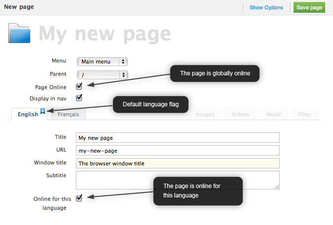
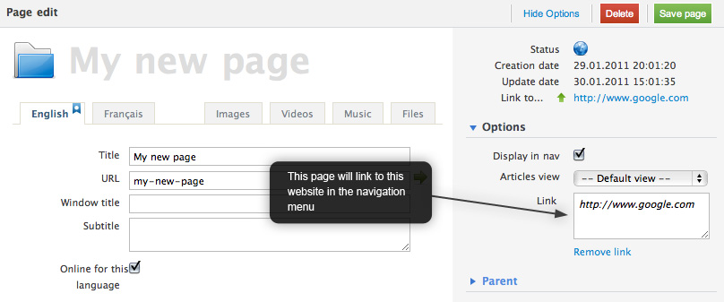

Pages
Pages organize the content. They are used to build the navigation.
Pages can be nested, to create a multi-level navigation.
Pages are also containers used to display content (articles) or simply links to internal content or external URLs.
One page can only have one parent menu.
Creating one page
To create one page, click on the Add Page icon on the right of the menu name

Pages settings
A page can be totally offline or online, or only online for a defined language.
In this case, the page must be globally online and offline for the wished language.

One page as a link
A page can link to an URL.
For example, a navigation item can link to an external URL or to an other internal page. Because pages are navigation items, simply add a link to a page to activate this behavior.
To create a link to another page in the website, drag the pointed page in the link area of the source page.

If a page is a link to an URL (internal or external), the content of this page will never be displayed.
Pages fields
Here is a description of the default fields of pages.
These fields can be set through the Ionize page edition panel and through the page options panel.
| Field | Can be translated | Description |
|---|---|---|
| URL | Yes |
Page's website URL. Must be unique on the whole website. |
| Windows title | Yes | Browser's window title. Useful for SEO. |
| Articles view | No | If set, define which view will be used by articles showed by this page when more than one article is displayed. |
| Articles / page | No | Activate the pagination. Pagination tags must be used in the view to use this option. |
| Home page | No |
Set this page as the home page of the website. Must be set so the website creates consistency home page URL. |
| Publish date | No |
If the current date is before the publish date, the page will not be displayed on the website. If set, the date displayed by the page <ion:date /> will be the publish date instead of the creation date. |
| Unpublish date | No | If the current date is after the publish date, the page will not be displayed on the website. |
| Meta Description | Yes | If set, replaces the META Description returned by the <ion:meta_description /> tag. By default, this tag returns the website's META Description |
| Meta Keywords | Yes | If set, replaces the META Keywords returned by the <ion:meta_keywords /> tag. By default, this tag returns the website's META Keywords |
| Access authorizations | No | Group from which access to this page is possible. All users who are in the selected group or in a group upper the selected one can access this page. |
Displaying page in views
Because URLs links to page content, the pages tags are called directly in views.
Page fields are directly callable in a view.
<html>
<body>
<!-- Displays the page's title -->
<ion:title />
<!-- Displays the page's date (creation date or publish date) -->
<ion:date format="d.M.y" />
</body>
</html>